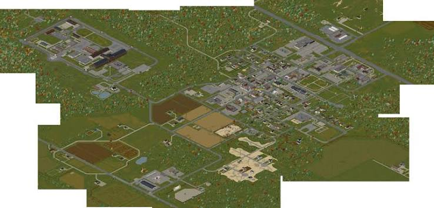

Rosewood

Pequena, com poucos zumbis; ideal para iniciantes.
História no jogo
Pequena cidade do interior de Knox Country, cercada por campos. Por ser compacta, concentra no mesmo lugar os serviços essenciais de uma cidade, o que a transformou no ponto de partida favorito de quem está começando.
Dificuldade
Baixa. É menor, tem menos zumbis e conta com uma delegacia e um quartel de bombeiros bem próximos, o que facilita a coleta de ferramentas e machados.
Pontos de interesse
- Quartel dos Bombeiros (sul)
- Delegacia de Polícia
- Bairro residencial ao lado do quartel
- Penitenciária a oeste
Como sobreviver
- Corra imediatamente para o Quartel dos Bombeiros no sul para pegar machados e roupas protetoras pesadas.
- Atravesse a rua até a Delegacia de Polícia para coletar armas de fogo e munição.
- Limpe os zumbis da vizinhança residencial ao lado do quartel para montar sua primeira base em uma casa de dois andares.
- Evite a Penitenciária a oeste nos primeiros dias devido à quantidade extrema de mortos-vivos.